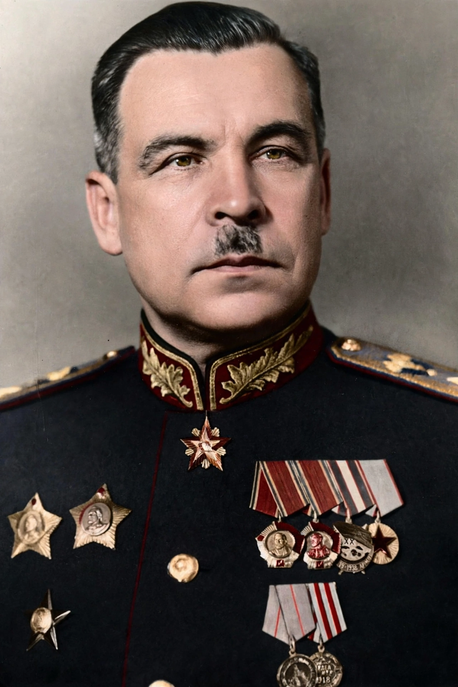

| Mikhail Tukhachevsky | |
|---|---|
 | |
| Born | 16 February 1893, Alexandrovskoye, Russian Empire |
| Died | 12 June 1937 (aged 44), Moscow, Soviet Union |
| Allegiance | Russian Empire; Soviet Union |
| Rank | Marshal of the Soviet Union |
| Battles | World War I; Russian Civil War; Polish–Soviet War |
Mikhail Nikolayevich Tukhachevsky (16 February 1893 – 12 June 1937) was a Soviet general and Marshal of the Soviet Union, one of the most brilliant commanders of the Red Army during the Russian Civil War and a leading military theorist of the interwar period. Nicknamed the "Red Napoleon," he developed the theory of deep operations that later shaped Soviet doctrine in the Second World War. He was executed during Stalin's Great Purge.
Born into an impoverished noble family, Tukhachevsky graduated from the Alexandrovsky Military School in 1914 and served in the Imperial Russian Army, being captured by the Germans in 1915. After escaping and returning to Russia, he joined the Bolsheviks in 1918. In the Civil War he commanded the 1st Army, the 5th Army (which captured Siberia from Admiral Kolchak), and the Caucasian Front against Denikin. In 1920 he led the Western Front in the Polish–Soviet War, advancing to the gates of Warsaw before being decisively defeated in the Battle of Warsaw. In 1921 he crushed the Kronstadt rebellion and the Tambov peasant revolt.
As Chief of Staff of the Red Army (1925–1928) and later commander of the Leningrad Military District and Deputy People's Commissar of Defence, Tukhachevsky championed mechanisation, mass tank and air forces, and the theory of "deep battle" and "deep operations" — simultaneous strikes throughout the depth of the enemy's defence. In 1935 he was among the first five officers created Marshals of the Soviet Union.
In May 1937, at the height of the Great Purge, Tukhachevsky was arrested on fabricated charges of espionage and treason in the so-called Case of the Trotskyist Anti-Soviet Military Organisation. After a secret one-day trial on 11 June 1937, he and seven other senior commanders were shot the following night. His execution decapitated the Red Army officer corps on the eve of war. He was posthumously rehabilitated in 1957 during Khrushchev's de-Stalinisation.
See also: Great Purge; Deep operation; Polish–Soviet War; Battle of Warsaw (1920).